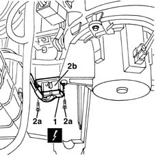

5040C44 fan motor electronic variator - r+r
- Path
- Procedures > 50 AUXILIARY UNITS > 5040 AIR CONDITIONING CASING AND COMPONENTS > 5040C air conditioner box and components > 5040C44 fan motor electronic variator - r+r
- Kind
- repair procedure (removal / refitting; the operation number is the code)
- Applies to
- all engines; all production periods
- Interactive page
- https://sloeber94.github.io/elrnDB-lYpsln/en/#/2429324
Applies to: all engines; all production periods
 Removing
Removing
 Refitting
Refitting1. Working under the right side of the dashboard, disconnect the electrical connection.
 | Name | Connector |
|---|---|---|
1 | Air fan adjustment resistance |
2. Undo the bolt (2a) and remove the variator (2b).

Applies to: all engines; all production periods
Refitting
RemovingCheck that the variator is not damaged.
Position the variator and fasten it using the bolt.
Connect the electrical connection.
Test the operation of the fan at the various speeds.